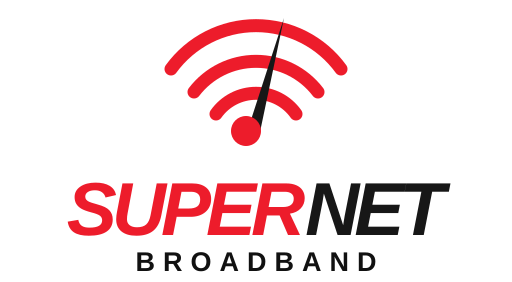
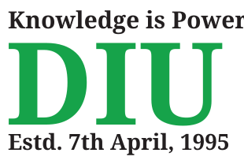

01
Network configuration & support
Access, connectivity, and customer-side troubleshooting workflows.
 IT / NETWORKS
IT / NETWORKSI work where connectivity, IT support, and service operations meet—helping networks perform reliably and people stay connected.
I approach technical challenges with curiosity, structure, and a service mindset: understand the issue, check the evidence, communicate clearly, and coordinate the right next step. I care about reliable systems and the people who depend on them.

Noakhali Supernet BroadbandContribute to ISP service delivery through customer support, network troubleshooting, client monitoring, reporting, and coordination with NOC and field teams. Help identify and resolve broadband connectivity concerns while maintaining clear communication across service zones.
Review customer line levels, ONU uptime, PON port status, and network performance; assist with LAN/WAN setup and monitoring; investigate speed and stability issues; and maintain accurate service records and customer updates.
Access, connectivity, and customer-side troubleshooting workflows.
Optical access status and customer service conditions across PON networks.
Network health observation, symptom identification, and service restoration.
Organized support through documentation, reporting, and team communication.
Detect→Isolate→Verify→Restore→Monitor

Dhaka International University · Bachelor’s degree
Open to opportunities in IT support, ISP operations, network engineering, and technology service teams. Let’s connect.
farhanahmedturjoy@gmail.com